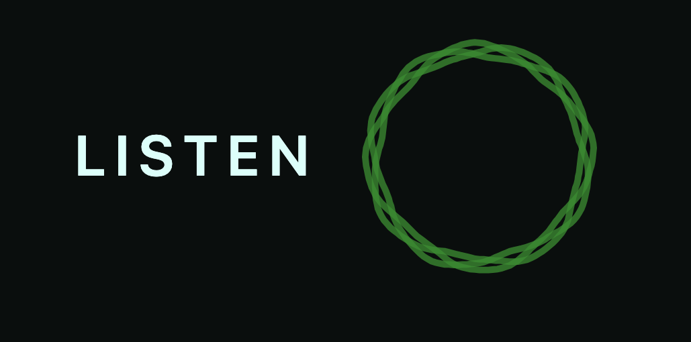
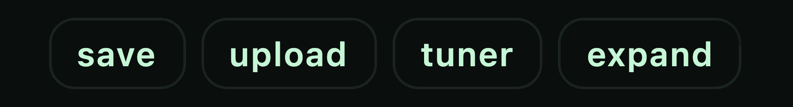
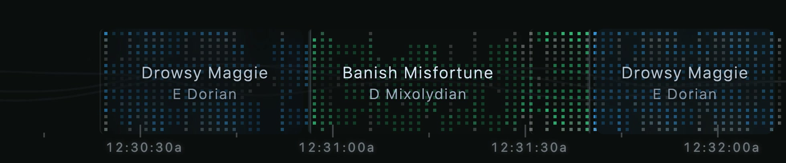
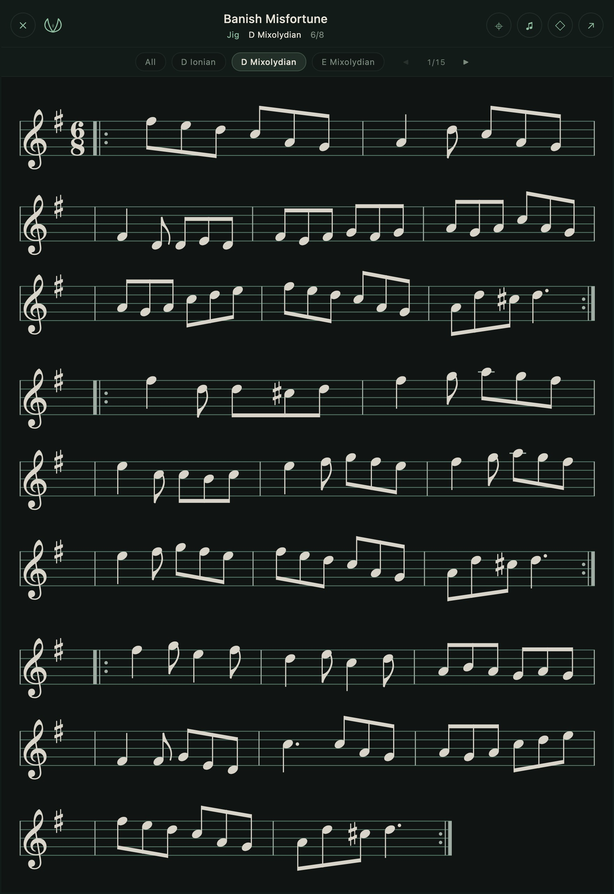
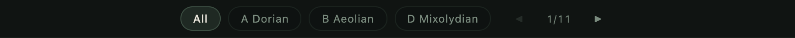
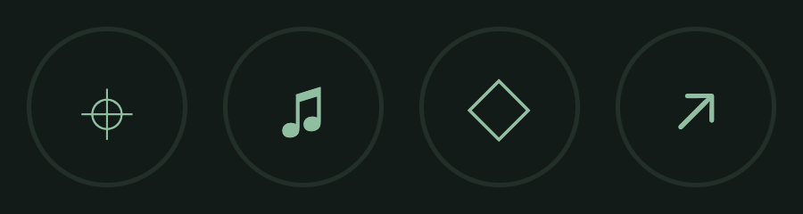
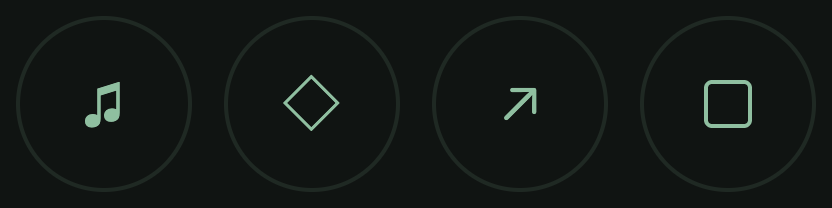
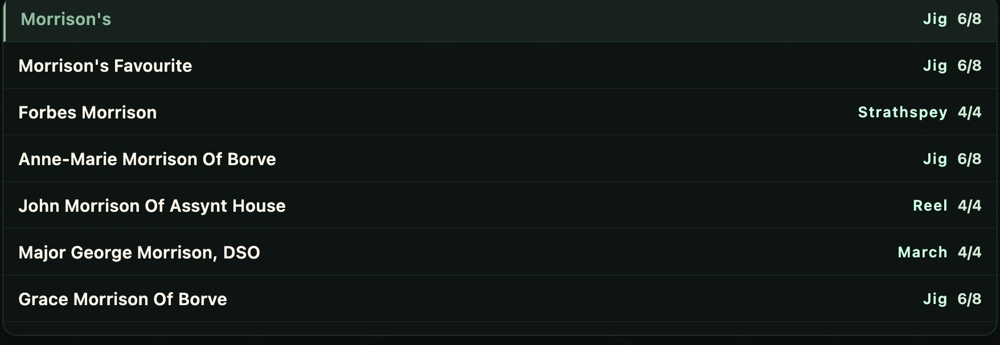

The app at a glance
This is JigRipper part-way through a session, listening and naming tunes as they are played. The numbers mark the parts you will use most.
- The search bar. Type a tune name here at any time. Your saved sessions, tunes and sets live behind the buttons to its right.
- The sheet music. When a tune is named, its music appears here on its own.
- The status line. What JigRipper is doing this second — listening, identifying, or settled on a tune.
- The listen ring. Tap it to start and stop listening. This is the control everything else follows from.
- The live edge of the river. Newly identified tunes appear at the right-hand edge.
- Earlier tunes lie to the left. As the session goes on, the river carries what you played away to the left. Scroll left to go back through the evening.
Getting started
Find the ring near the bottom of the screen, beside the word listen. Tap it, and JigRipper starts listening through your microphone.

Play your tune. You do not have to start at the beginning, and you do not have to play it perfectly.
The buttons above the river

- save
- Keeps this session so you can come back to it.
- upload
- Hands JigRipper a recording instead of the microphone.
- tuner
- A tuning dial, for while you are listening.
- expand
- Makes the river taller. It then reads compact to put it back.
What the status line says
- listening
- It can hear you, but has not settled on a tune yet.
- identifying
- It has a candidate in mind and is gathering more evidence.
- locked
- It has settled. The name appears beneath, with the tune type, time signature, tempo, key, and the instruments it thinks it can hear.
- keep playing…
- It heard music but could not match it. Play on — it keeps trying.
- noise
- It hears sound, but not music. A fan, a room, a conversation.
- silence
- Nothing loud enough to work with.
The tune river
The river is the record of your session. Every tune you play becomes a band in it, laid out left to right in the order you played them.

Scrolling back through it
- On a phone or tablet: drag the river sideways with your finger.
- On a computer: use the mouse wheel over the river. An ordinary up-and-down wheel moves it sideways. Clicking and dragging does not scroll it.
While you are listening, the river follows along on its own. Scrolling back stops that, so you can look at something without it sliding away. To return to the present, press the ▶ button at the right-hand edge, scroll all the way back to the right, tap an empty part of the river — or just wait. It returns by itself after fifteen seconds.
Reading the bands
- A band is one tune played in one key. Playing the same tune twice in a row, with less than about four seconds between, shows as a single band.
- A short band will not have room for its label. A tune needs around ten seconds of playing before its name will fit.
- The faint colours only separate one tune from the next. They do not mean anything about the music, and they are reused as the session goes on.
- If you change key, the band splits in two and the second half shows the new key underneath the name. The name stays the same, and there is no dividing line — the changed key is the signal.
Tapping a band
Tap any band to open that tune's sheet music, in the key you played it in. Tap the same band again to let go of it.
Sheet music
Sheet music appears on its own when a tune is identified, and whenever you tap a band in the river or pick a tune from search. The full screen button fills the screen with it.

Keys and settings

Most tunes have been written down many times, in slightly different versions. Each one is a setting. 1/11 means you are looking at the first of eleven, and the arrows either side step through them.
The buttons to the left filter by key. All shows every setting; picking a key narrows the list to settings written in it.
The buttons


- Follow along
- Highlights the bar you are playing and moves through the music with you. It only appears when the sheet on screen is the tune JigRipper is actually listening to — if you are holding a different tune open, it has nothing to follow.
- Show chords
- Adds suggested chords above the staff. Only offered for tunes that do not already have them.
- Save this tune
- Keeps the tune in your collection. The diamond fills in — ◆ — once saved. Tap it again to remove it.
- Open on thesession.org
- Opens the tune's page on thesession.org, where the music came from.
- Full screen
- A small outlined square, in the smaller sheet only. In full screen its place is taken by ×, which closes.
Holding a tune still
The clasp at the top left of the sheet says whether the music will change under you. Green, with the leaves open, means it is live: when JigRipper hears a new tune, the sheet changes to match. Gold, with the leaves closed, means it is held, and the music stays where it is no matter what it hears. Tap the clasp to switch.
Gestures on the music itself
These work on a touch screen, in both the small sheet and full screen.
- Long press
- Holds the tune still, or lets it go again. The same thing the clasp does.
- Tap the left or right edge
- Steps to the previous or next setting. The middle of the sheet does nothing on purpose, so you can tap it without the music moving.
- Double tap
- Full screen, and back again.
- Swipe left or right
- Also steps through the settings.
On a computer, use the buttons and arrows instead. The ← and → keys step through settings too, as long as you are not typing in the search box.
Searching for a tune
The search box sits across the top of the screen. Type at least two letters of a tune's name and matches appear underneath.

Tap a result to open its sheet music. Search matches tune names only — not alternative names, not types, not keys.
On a computer
- Just start typing anywhere on the page — the letters go into the search box.
- Down and Up arrows move through the results.
- Enter opens the highlighted one.
- Escape clears the box and closes the list.
Tapping the empty search box brings back the last few tunes you looked at, under the heading RECENT.
Sessions, tunes and sets
Three collections sit at the right-hand end of the search bar: sessions, tunes and sets. On a narrow screen they fold into a single button reading library ▾. The number in brackets is how many you have.
Sessions
A session is a whole evening's playing — the river, saved. Press save above the river. It is named after the date and time, and it briefly reads saved ✓ so you know it took.
Open the sessions list and tap one to load it back into the river, where you can scroll through it and tap tunes exactly as you did on the night.
- share
- Hands the session to whatever you normally share with — messages, mail, notes. On a desktop browser that cannot share, it copies to the clipboard instead.
- copy
- Copies the session straight to the clipboard as plain text.
Either way you get something like this, ready to paste anywhere:
- the session name, how long it ran, and how many tunes;
- the tunes grouped into sets, with the time each set started;
- a thesession.org link under every tune.
The shared text is a summary, not a transcript. Tunes you played for less than about twenty seconds are left out, and a tune repeated immediately is listed once. So the shared list can be shorter than what you see in the river.
To rename a session, press and hold its name and type a new one. The × deletes it — immediately, with no confirmation. JigRipper keeps up to fifty sessions and will not throw away an old one to make room for a new one; if you reach the limit it says so, and you delete one yourself.
Tunes — your saved collection
The tunes list holds everything you have saved with the ◇ button on a sheet. That button is the only way in.
Tap a tune in the list to open its music. Sort the list by recent, name, type or key. The × removes a tune, as does tapping the filled ◆ on its sheet.
Sets
A set is a few tunes you play back to back. JigRipper lets you write them down so you remember the order. It does not play them.
- + New set
- Starts an empty set. Use + Add tune to search for tunes, or pick from your saved ones.
- From river
- Builds a set out of what you just played. The panel closes and a small bar appears reading BUILDING SET. Tap tunes in the river to add them, in order, then press save set.
In a set you can rename it, reorder tunes with ▲ and ▼, and remove one with ×. Tapping a tune in a set opens its sheet music. Deleting a set is immediate and cannot be undone.
Listening to a recording
The upload button hands JigRipper an audio file instead of the microphone — a recording of a session, a track from an album, a voice memo. It accepts the usual formats (MP3, M4A, WAV, FLAC and others) up to twenty minutes long.
It takes longer than live listening, and shows its progress. When it finishes you get Deep listen complete and a list of the strongest candidates grouped by tune type, each one a link to thesession.org so you can check it against the real thing. View river puts the results into the river.
Starting an upload stops live listening first.
Settings worth knowing
Open settings with the gear button at the end of the search bar — it reads ⚙︎ settings when there is room, and just ⚙︎ on a narrow screen. Most of what is in there is best left alone; these are the ones worth a look.
- High-contrast mode
- Brighter, bolder and larger text throughout the app. Under Display.
- Staff
- Treble, bass, alto or tenor clef for all the sheet music. The non-treble clefs shift the octave so the notes stay on the staff. Under Sheet music.
- Microphone
- Which microphone to listen through, if you have more than one — a clip-on mic or a USB interface will hear far better than a phone across the room. Under Input.
- Temperament
- For the tuner. Equal temperament by default; just intonation reads zero cents on pure intervals above a root you choose. Under Tuner.
- Noise suppression
- On by default. Stops JigRipper hearing a tune in an air conditioner. Leave it on.
- Instrument presence
- On by default. Shows which instruments it thinks it can hear while you play.
The rest of the Audio engine section is the listening machinery itself. It ships set the way it works best. If you change something and things get worse, the hint under each switch tells you what the default was.
When it goes wrong
It is not hearing me
First, the microphone. JigRipper will tell you if it cannot get one:
- “Microphone access is blocked” — your browser or phone is refusing. Allow the microphone in its settings, then tap the ring again.
- “No microphone found” — there is no input device at all.
If the status says silence, it is not getting enough level. Move closer, or pick a different microphone in settings. If it says noise, it can hear sound but has decided it is not music yet.
It is showing the wrong tune
It happens. There are over twenty thousand tunes in the collection and a great many of them share phrases. Things that help:
- Keep playing. It reconsiders continuously, and the river corrects itself behind you for about ten minutes.
- Play a different part. If the A part is a common one, the B part may settle it.
- Get the microphone closer to the instrument.
- Check the alternatives. If a name looks wrong, search for the tune you believe it is and compare the music side by side. The ↗ button opens thesession.org, which is the source of the notation.
Playing a recording out loud for JigRipper to hear is the hardest case of all, and the least reliable. Upload the file instead if you have it.
It is showing the wrong key
A genuinely wrong key — D shown where you played G — is a different matter, and worth checking. Use the key buttons above the sheet to look at the settings in the key you actually played.
The music on screen keeps changing
That is the sheet following what it hears. Tap the clasp at the top left, or long press the music, to hold it still.